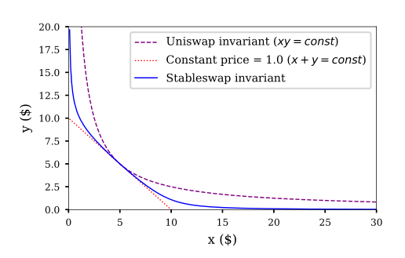
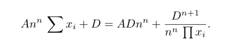

V1
价格会使用恒定产品(x*y=k)
维持 eth_pool（ETH 数量） * token_pool（代币数量） = invariant（不变量） 这个关系来实现
ETH → OMG
TH_pool（ETH 资金池） = 10
OMG_pool（OMG 资金池） = 500
invariant（不变量） = 10 * 500 = 5000
OMG 购买者发送 1 ETH 到这个合约。其中 0.25% 的手续费会被划分给流动性提供者，剩余的 0.9975 ETH 会被放入 # Curve简介
Curve.fi借鉴Uniswap、Balancer等前人经验，给稳定币的发展的提供了孵化地，各种创新稳定币可以通过Curve来为自身做初期价值锚定，为项目的场景发展争取时间。Curve作为这些稳定币之间的桥梁将会成为一个长期Defi基础设施，这些稳定币的交易量便是Curve.fi的价值根基。大规模的稳定币AMM兑换市场，他们独有的算法使得池子大部分时候滑点极低，白皮书 。
定位在稳定币或者等价币之间的交换（如ETH和sETH，BTC和wBTC等）：
在流动性池中的代币充足的情况下，滑点尽可能的小甚至没有；
避免流动性池中某一种代币被全部兑换，在某一种代币数量很少的时候要提升代币价格；
以流动性池中只有两种代币为例，如USDC/DAI，交易价格是由-dy/dx来决定的，如果让交易价格稳定为1，最简单直接的恒等式就是采用一个斜率为-1的直线
x + y = const
需要考虑到一个价格自调整的能力，像Uniswap、Bancor等协议，是通过乘积恒等式来实现价格调整：
x * y = const
价格滑点会比较明显，单笔交易量越大，价格变化越大，因此不太适合稳定币之间的交易。

蓝色曲线即代表稳定币之间交易的AMM曲线，和Uniswap这种乘积恒等式的AMM设计来比，在预期的稳定价格附近有比较小的滑点，和恒定总和的AMM设计相比，在某一种代币余额产生较大偏离时，交易价格会发生比较大的变化，促使流动性提供者或者套利者通过市场行为恢复流动性池中代币余额的均衡。
Curve需要做的就是通过函数关系，能够在一定范围类，通过函数某些参数，都能够切换到这两个的任意一种状态，比如，交易量特别大的时候接近恒定和，在流动性快枯竭的时候接近恒定积。
引入一个因子 X，用来调整恒定总和恒等式影响占比，值越大，则曲线更加倾向于零滑点的直线，值越小，则曲线更加倾向于高滑点的恒定乘积曲线。在curve finance的白皮书中也成为杠杆（leverage），动态杠杆需要满足两个特性：
- 自适应梯度，当流动性池中的各个代币余额相等或者接近的时候， X 的值增大，降低滑点，反之值减小，增加曲线梯度，即交易价格，控制余额比例的偏离；
- 与交易池中代币种类不相关，即与维度不相关。
 - 在这个恒等式中，A的值是在创建流动性池的时候选择的，恒定不变，D的值在质押代币之后需进行计算，并且在swap过程中要不断的进行迭代更新。
Curve Finance支持与其他DeFi协议的融合，Curve的流动性池也因此分为三种类型：
Plain pools：两个或多个稳定币交易流动性池，用于交易的流动性池，目前有3CRV和其他稳定币的池子；
Lending pools：这个交易池中，对原生的代币进行了一个再包装（wrapped tokens），例如用户质押的是DAI，但实际流动性池里是cDAI，这样做的目的是为了可以将质押到流动性池中的代币再借贷出去赚取利润，而用于交易的流动性池中实际保存的是wrapped tokens，比如ETH的sETH、BTC的sBTC等；
Metapools：与另外一个流动性池中的流动性代币（LP）组成的流动性池，这种流动性池的目的是为了给用户一个重叠质押的机会，例如用户质押DAI到一个Plain pool获得LP，然后又将LP质押到Metapool继续赚取收益，就像是你买了债券，然后又用债券换了一个理财，这样你既能获得债券的收益，又能获得理财的收益，目前Curve池子中最主要的是稳定币的3CRV跟其他某代币组成的池子，获取3CRV本身收益，这个池子的收益，还有跟3CRV组的这个币本身的分红。额外token、额外奖励、gasfee。
veCRV机制
质押Curve代币获取veCRV，能够对收益加速，veCRV介绍：
收取Curve协议50%的交易手续费，收取手续费比例按照veCRV占比均分。
Vote Power。veCRV的投票权机制非常简单，投票权跟锁仓时间成正比，veCRV会随着时间衰退的，所以如果为了保持足够的投票权，意味着要一直刷新锁仓的时间。
Boost 机制。Boost是流动性挖矿的加速机制，在没有boost的情况下，流动性挖矿的基数只有40%，通过足够拥有足够量级的veCRV的情况，才能获得Boost倍速的增加，最高2.5x，是一个线性增加的机制。
一切共识都需要时间的积累，时间->共识->价值。Curve.fi最简单的手法：锁仓，并且量化锁仓的价值 — 投票权力。其实锁仓增加投票权并非什么新鲜事物，而为什么veCRV成功了？主要还是跟boost的机制的配合，用户们有了非常直接争夺CRV的理由：更多投票代表更多收益，这便是veCRV的博弈基础。这个功能让项目方几乎是永远锁住了一部分CRV来保持自己的在Curve上的权力。同时这个veCRV也对抗了为了投票瞬间直接大量买入，再投票结束再大量抛售的情况，保持了币价的平稳。一个地址在提供流动性的同时还需要跟流动性对应足够量级的CRV才能收益最大化。
由于项目预挖和前期的通胀太快，导致后期如果用户想到最大的程度的boost需要CRV数量过于庞大，大量拥有CRV的鲸鱼和流动性提供散户最终分叉成两个无法交集的集体，veCRV机制正式成为一个缺陷，也导致了接下来介绍的优化平台的战争开端。
目前为止治理白名单：yearn finance、stakeDAO、Convex 。
StakeDAO后面将旗下的CRV转入Convex中，帮助convex完成原始积累。
CRV代币
CurveDAO于2020年8月13日正式启动，推出治理token CRV。CRV的最大供应量为30.3亿枚，其中62%将分配给社区流动性提供者、30%分配给项目团队和早期投资者（2-4年归属）、5%作为社区储备、3%分配给拥有2年归属权的员工。
CRV目前具有三个主要用途：社区投票，质押获取社区治理费分成和提高流动性池的收益（最高达2.5倍）。而实现以上用途的前提是将CRV锁定并获得veCRV。与常规采用DAO治理的DEX协议相比，Curve的创新之处在于在CRV的锁仓规则中添加了时间函数：veCRV=CRV*T/4（T为锁仓年限），即质押CRV的时间越长，收到的veCRV就越多，选择CRV锁仓4年才能1：1的获得veCRV。需要注意的是，且该质押锁仓行为不可逆转且veCRV不可流通。
Convex
收益和流动性出现矛盾，所以就有Convex的出现，就是实现收益和流动性的分离，用户可以只获取较高收益，出卖自己的投票权，这就是Convex做的事情。
Convex的协议token是CVX，其最大供应量为1亿，其中的50%将分配给通过Convex平台向Curve平台提供流动性的用户（为初始的流动性提供者增厚一层收益）、25%向CVX/ETH和cvxCRV/CRV矿池提供流动性挖矿激励（矿池的建立使得cvxCRV的流动性大大改善，是Convex破解veCRV流动性不足的手段之一）、10%归属Convex团队、9.7%归属合约、3.3%归属早期投资者、2%空投给veCRV的持有者。
Convex其实就是一个像比较大银行，用户把钱存在这里，获取比Curve高一点的收益，而Curve就只能定期存取。Convex本身它是把所有的CRV都锁了四年的，因为从平台角度，越久对它来说越好，前提是不会跑路。质押一枚CRV即可获得一枚cvxCRV，这一过程有些类似资产证券化。就有点像，集中散户手中的东西干大事。
CRV token持有者选择
持有CRV，等待币价上涨
Curve质押CRV换取veCRV，将获得Curve协议的投票权与管理费分成，但要牺牲流动性
前往Convex质押CRV取得cvxCRV，其将可以在不牺牲流动性的前提下获得veCRV持有者所能享受的最高收益与CVX，但加速收益的16%会作为平台费被收取。（基于Convex平台）
前往SushiSwap提供流动性，其将可以获得SUSHI、交易手续费分成与CVX激励。（基于Convex平台）
Convex运行良好来自于CVX的价格支撑，CVX价格过低，第三种收益就会下降，SushiSwap的流动性挖矿收益率下降或将引发cvxCRV的流动性不足，Convex需要减少CVX与cvxCRV的流通盘，收取的16%费用可以激励CVX与cvxCRV的持有者质押他们手中的token。
10% 激励cvxCRV质押者，以CRV形式给出
5% 鼓励CVX质押者，以cvxCRV形式给出
1% 偿付合约调用gas费
引导 CVX 和 cxvCRV 早期的流动性，如果在 SushiSwap 的 cvxCRV/CRV 和 CVX/ETH 交易对提供流动性，则可将对应的 LP 令牌存放在 Convex 上，并获得对应的 CVX 奖励。cvxCRV 保留收益权 没有投票权，收益会高一点。
vICVX（convex治理权： 锁定16周 略高5%收益
CVX代币
CVX 是 Convex 的原生代币，最大供应量为 1 亿枚
50%（5000 万枚）是 Curve LP 奖励，按比例直接分发
25%（2500 万枚）用于流动性挖矿奖励，支持 CVX/ETH 和 cvxCRV/CRV 交易池，分发期为 4 年
10% （1000 万枚）是 Convex 创始团队激励，在产品上线后锁定一年
9.7%（970 万枚）作为国库储备，锁定一年，用于未来的社区激励或其他社区活动
3.3%（330 万枚）分发给投资者，全部锁定一年（此部分 CVX 没有 cvxCRV 铸造）
1%（100 万枚）的 CVX 被空投给 veCRV 代币持有者
1%（100 万枚）的 CVX 奖励给参与 Curve.fi 治理投票（即支持将 Convex 列入 Curve.fi 白名单）的用户
Curve的治理控制权
投票控制权的获取目前以大型的算法稳定币项目为主，一些衍生品和周边服务的游击队也不停的加入到混战当中，后续应该衍生品等项目应该也是有这个需求的。
Frax/FXS：老牌算稳项目。Convex专门开辟了Frax专区，FXS也开启了自己的veFXS模式。
Spell/MIM：Abracadabra, 一个扬言要彻底打败Maker的生息资产稳定币项目，稳定币是MIM。MIM/3CRV池子，利用Curve的站住脚跟成功典型代表。核心人物Daniele。
UST：Terra系得算法稳定币。跟上面的Daniele合作，把两个非传统抵押型稳定币绑定在一起。Terra 2022刚开始就购入了超过60w的CVX，也加入了Curve大家庭。
OHN/Redacted：非传统形态的算法稳定币。Ohm和Frax的关系密切，在OIP-43中就已经提议增加CVX债权，增持CVX放入国库中，为应对未来的竞争做准备。Ohm加持的Redacted(BTRFLY)协议更是作为一种Convex之上的优化策略方案进入了战争当中，使用Ohm机制发放债券吸引了大量CRV和CVX，帮助用户更好的发挥手中的CRV和CVX收益。
总结
Curve还接入了iEarn、Compound、Synthetix等借贷协议与合成资产协议，在提高资金利用率的同时给予流动性提供者额外的收益，这种乐高式的金融组合也是DeFi的一大魅力。
做市收益、Convex 完成治理套娃、进阶的贿赂选票，入局的协议也从 Yearn & Stake DAO、到 Olympus DAO & FRAX、到各类稳定币项目 Alchemix & Abracadabra、到新生项目 [Redacted] Cartel。
Curve.fi在可见的未来中，会跟Uniswap，Maker，AAVE一样，成为Defi的基石，是每个Defi玩家都应该深入理解的项目。
作为一个稳定币的DeFi协议，Curve Finance为上层的应用或者衍生品提供了基础支撑，相信未来肯定还会有更多的创新性的尝试，包括跟元宇宙的结合等。
长远来看，就如Uniswap创始人在推特上说的而言，Curve是以博弈论为基础，这种激励不能够长久。我个人的看法并不否认这种看法，我相信几年后会有新的机制和产品出来，但是，目前状况下，局面还没有打开的情况下，Curve是所有稳定币启动的最好去处，有了先发优势，但是资本本身是逐利的，谁又知道会有什么新的产品会更吸引人呢，比如AC的solid，至少是一个改进和有利的竞争，但是还是在一条路子上，尽管AC已经退出或者隐匿。